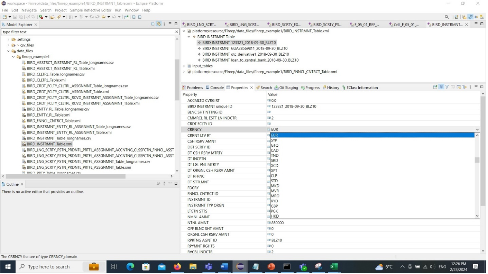
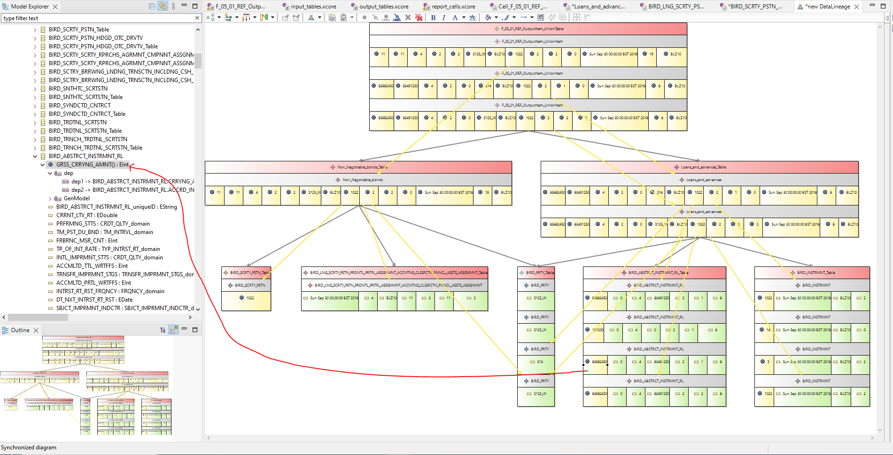

Free BIRD Platform
A Free, Open Source, Vendor Neutral Platform for Creating BIRD Test data and Running BIRD Transformations
The Free BIRD Platform
The Free BIRD Platform is a platform that can be generated using the BIG Open Studio. It runs on the desktop using mature open source technologies, specifically The Eclipse IDE , and its plug-in architecture for creating and installing add-ons.The Free BIRD Platform enables users to create data, execute transformations, and view transformation results and the data lineage of the calculations.
Here is an example of test data creation with BIRD aware forms:

Here is an example of visualising, and interacting with, the lineage of an executed transformation:

The Free BIRD Platform is an example of a BIRDPlatform.
BIRDPlatform = BIRDSeed + Big Pot + Base Platform + Add-ons

A BIRDPlatform is a usable platform for working with data in BIRD datamodels and executing BIRD transformations to get results and lineage back to source data.
A BIRD Platform has 3 parts:
- A mature existing extendable technical platform with existing useful add-ons and a mature well documented means to create add-ons.
- Add-ons for the base platform, these can be custom add-ons to provide behavior for regulatory data models and transformations, or general or existing add-ons like version control integration.
- A representation of the BIRD datamodels and BIRD transformations created from the BIRD Seed by a suitable BIG Pot.